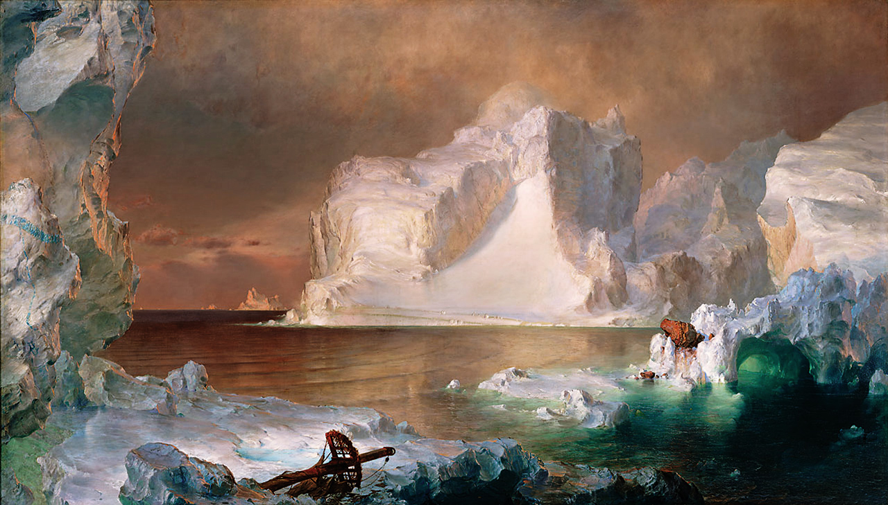
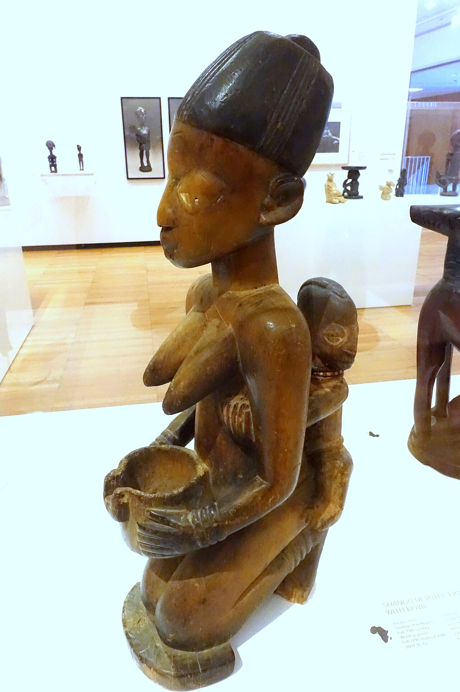
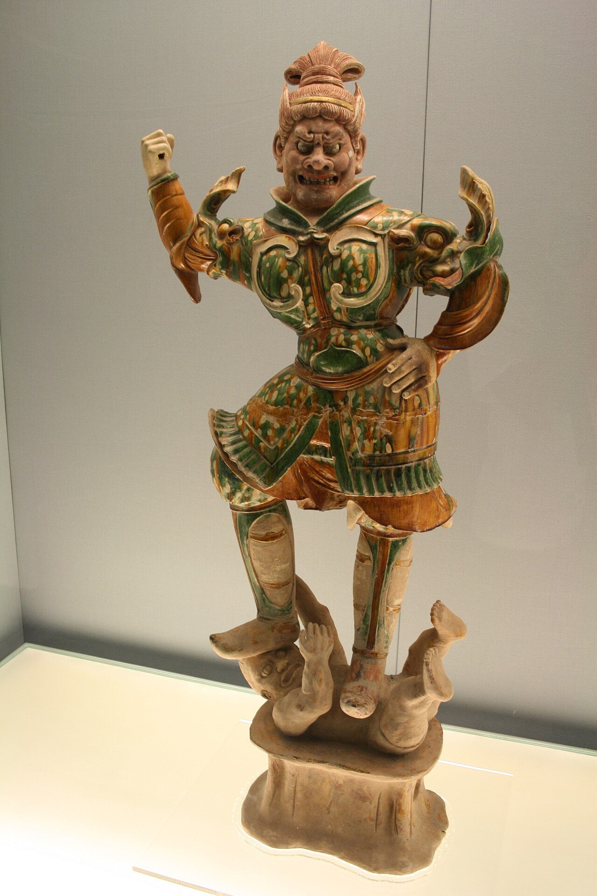
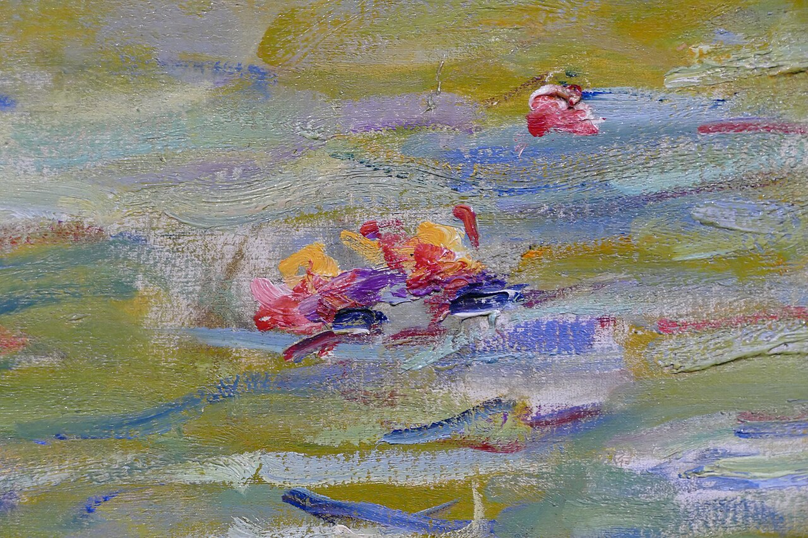
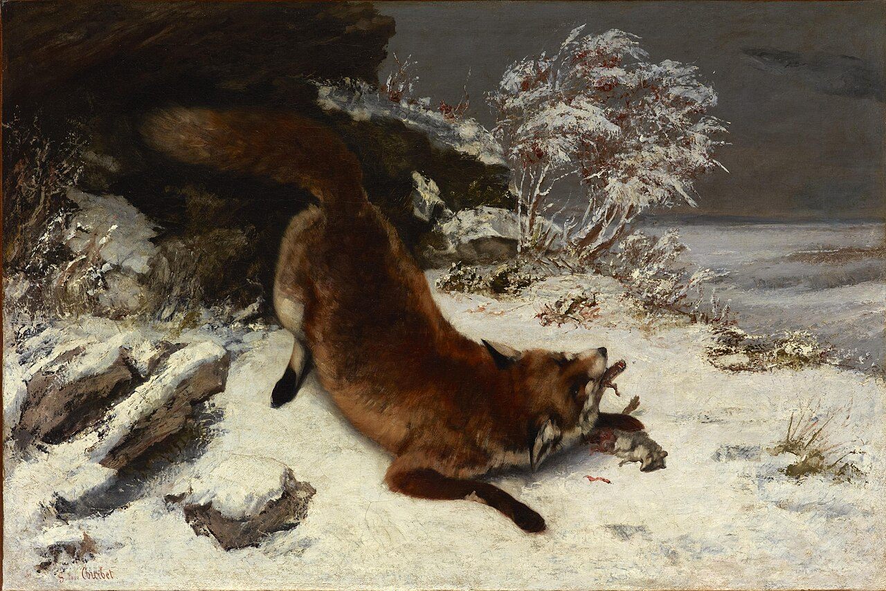
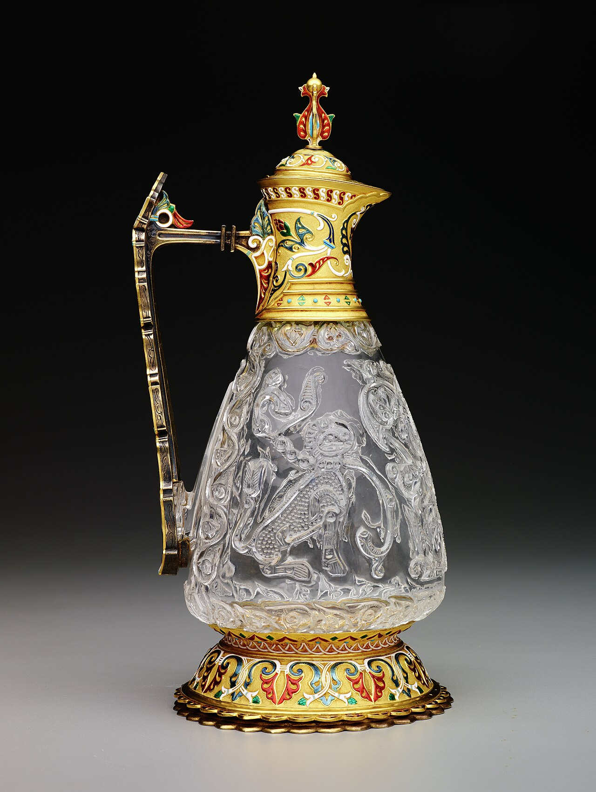
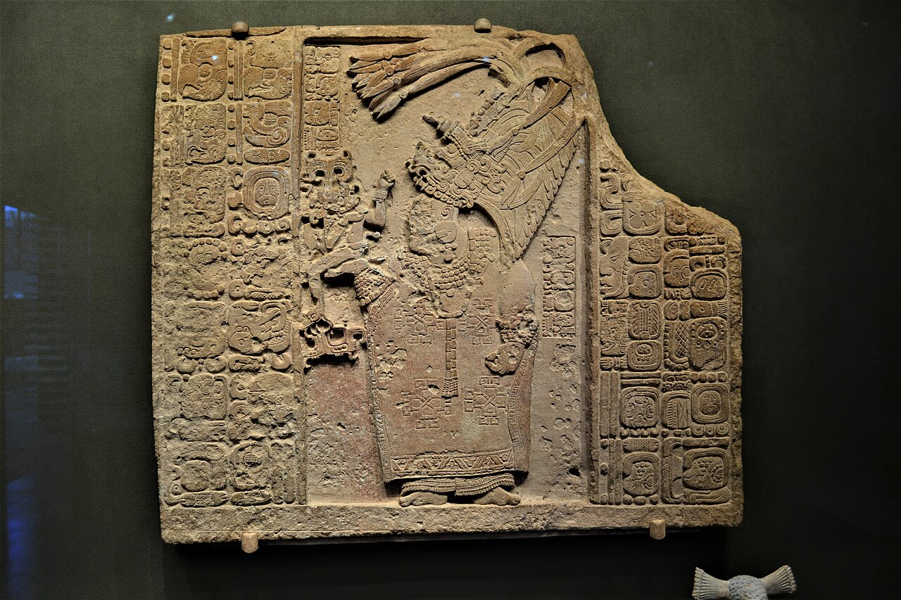

成立于 1903 年，坐落德州达拉斯艺术区。馆藏横跨五千年、逾 2.4 万件。下列 10 件由 DMA 策展人精选——到了别错过。一件一页，逐件细看。

傍晚阳光把冰山照得通透，海面泛着蓝绿光泽，前景一截断桅暗示着危险。此画首展于南北战争募捐展，被誉为「美国迄今最辉煌的艺术品」。被一位英国铁路大亨买走后失踪一百多年，1970 年代重现拍场，以打破美国艺术品纪录的价格被匿名买下、捐给 DMA。

为约鲁巴王室服务的雕刻大师 Olowe of Ise 的彩绘木雕。表现约鲁巴待客礼仪——向宾客献上可乐果。一位「带来荣耀的女人」(olumeye) 捧着一只满布大胆几何纹饰的木碗，碗底由一圈女性人像高举的双手托起，其中一颗有胡须的头颅竟然可以活动。Olowe 的作品被欧美澳多家博物馆与私人收藏。
专为 DMA 委托创作的「可移动壁画」，由三大幅画板组成，是博物馆拓展墨西哥与拉美艺术收藏的里程碑。一个巨大的红色抽象人形向上伸展，探入奇幻旋动的天空。塔马约擅长把立体主义等欧洲画风与墨西哥民俗主题揉合在一起，整件作品透着一种魔幻的希望感。

一件 8 世纪初的中国佛教护法塑像，是中国护法神俑里的精品。融合道教与佛教图像——一名身披橘绿装饰铠甲的猛士，戴着奇幻的鸟形头盔，威风凛凛地踩在一只扭动的恶魔身上。
开创性的多媒材艺术家、Confederated Salish 与 Kootenai 部族成员的代表作。画面是抽象彩色矩形，配上滴落的黑色线描——独木舟、老式系扣靴等 19 世纪物件。在赞颂当代原住民文化的同时，审视美国充满问题的过去与现在。

莫奈标志性水景花园系列之一——他在生命最后三十年画了 250 多幅睡莲。这幅《睡莲池（云）》视角特别，聚焦于睡莲叶之间、倒映在池面上的云朵。

这是库尔贝在 1861 年沙龙展出的四幅备受好评的画作之一。库尔贝精彩地描绘一只狐狸正在捕食鼠类——它蹲伏在雪地里，肌肉紧绷、随时准备逃跑，皮毛以极富触感的笔触画出。雪地背景的中性色调，是库尔贝的一项拿手好戏。

由无名工匠为埃及法蒂玛王朝（909–1171）开罗的统治者所造。约 1060 年代被卖到欧洲，后由法国著名金银匠 Jean-Valentin Morel（1794–1860）加上金与珐琅装饰。它是全球仅存七件水晶执壶之一，工艺惊人——纤薄的水晶壁有些地方只有 1 毫米厚，表面还雕刻、压印着繁复的纹样。
这件巨大的桃花心木柜由无名工匠在葡萄牙殖民地果阿制作。柜身镶嵌着数千片珍珠母与玳瑁，排列成富有植物意象的纹样，原本用来陈列珍奇与宝物。完工后它很可能被运往墨西哥的一处主要贸易中心，被秘鲁总督买下。

由无名玛雅工匠雕刻的精美低浮雕石灰岩石板。画面是一位玛雅王室女性，戴着高耸的羽毛头饰、串珠领饰、镂空玉珠裙，四周环绕象形文字。残留的红、蓝颜料说明它曾被嵌在墙体或门框中，因此免受风雨侵蚀。